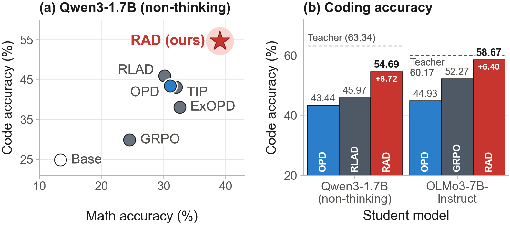
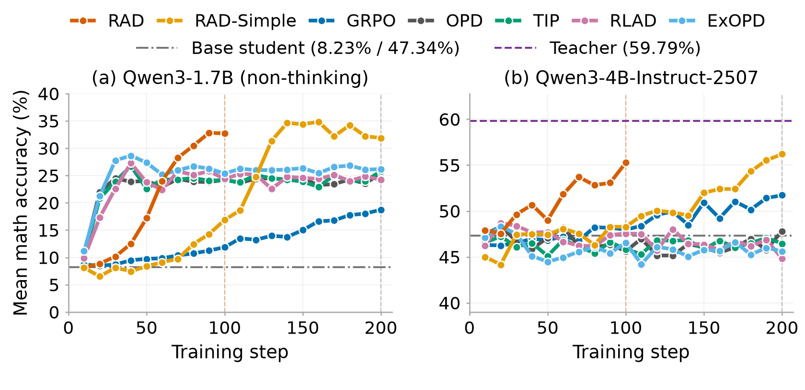
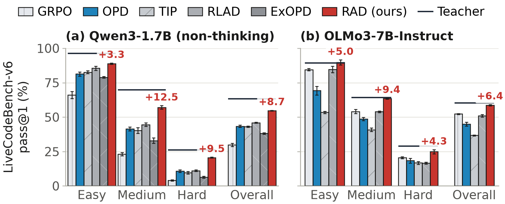

Competition math
+6.48pp
Qwen3-1.7B (non-thinking)
Six-benchmark mean
1 UC San Diego2 Purdue University3 AWS AI Labs4 Amazon
From uniform teacher imitation to reward-guided token weights.
Download videoReinforcement learning with verifiable rewards improves the reasoning capabilities of large language models, but remains computationally expensive and sample inefficient. On-policy distillation (OPD) provides dense token-level supervision from a stronger teacher, yet standard OPD distills every token regardless of whether the teacher’s preference actually improves task reward. Existing token-selection methods rely on proxies such as uncertainty or teacher–student divergence, which need not identify reward-improving supervision. We introduce Reward-Aligned Distillation (RAD), a bilevel framework that weights distillation signals based on their predicted effect on the student’s post-update reward. RAD differentiates through a temporary optimizer step to score each token’s supervision, then updates the token weights by projected ascent from the initial token weights. The resulting weights can strengthen, suppress, or reverse individual distillation-gradient contributions. At a matched training-response budget, RAD improves mean accuracy on six competition-math benchmarks over the strongest baselines by 6.5 percentage points for Qwen3-1.7B (non-thinking) and 2.5 points for Qwen3-4B-Instruct-2507. RAD-Simple, a simplified variant, achieves comparable math accuracy at the same training-response budget. On LiveCodeBench-v6, RAD reaches 54.69% and 58.67% pass@1 with Qwen3-1.7B (non-thinking) and OLMo3-7B-Instruct, respectively, exceeding the strongest baselines by 8.7 and 6.4 points. These results support reward-guided weighting of teacher supervision across model families and tasks.
Read the full paper on arXivOn-policy distillation provides a learning signal at every token. RAD uses the student’s predicted post-update reward to decide how to weight that supervision.
Take a temporary student update. Measure each token’s reward sensitivity. Use those scores to strengthen, suppress, or reverse its distillation contribution.

Compare uniform OPD with RAD. Move the slider, inspect a token, or walk through one training iteration.
RAD takes a temporary optimizer step, scores token supervision by its effect on post-update reward, and commits an update with projected token weights.
For the illustrated zero-origin setting: wt = clip(γIt, −1, +1).
The temporary update is discarded. The real update starts from the original student parameters and optimizer state.
Gains over the strongest compared baseline, using 102,400 generated training responses—including RAD’s meta responses.
Competition math
+6.48pp
Six-benchmark mean
Competition math
+2.51pp
Six-benchmark mean
LiveCodeBench-v6
+8.72pp
Pass@1
LiveCodeBench-v6
+6.40pp
Pass@1
Mean accuracy across six benchmarks: AIME24, AIME25, AIME26, HMMT2025-Feb, HMMT2025-Nov, and OlympiadBench.
| Student | Best baseline · 200 updates | RAD · 100 updates | RAD gain |
|---|---|---|---|
| Qwen3-1.7B (non-thinking) | ExOPD32.59 ± 1.81 | 39.07 ± 1.59 | +6.48 pp |
| Qwen3-4B-Instruct-2507 | GRPO57.29 ± 1.72 | 59.80 ± 2.07 | +2.51 pp |
A variant that removes the temporary update and reuses distillation rollouts. At the same response budget, its 200-update math means are 38.42% for the 1.7B student and 60.84% for the 4B student.

LiveCodeBench-v6 pass@1 across 1,055 programming tasks: 322 easy, 383 medium, and 350 hard.
| Student | Best baseline · 200 updates | RAD · 100 updates | RAD gain |
|---|---|---|---|
| Qwen3-1.7B (non-thinking) | RLAD45.97 ± 0.26 | 54.69 ± 0.31 | +8.72 pp |
| OLMo3-7B-Instruct | GRPO52.27 ± 0.26 | 58.67 ± 0.52 | +6.40 pp |

Training budget. RAD uses 100 updates; baselines and RAD-Simple use 200. The matched budget counts generated training responses, including RAD’s meta responses.
Sampling. Temperature 1, top-p 1, and a 32,768-token generation limit. Math uses 16 responses per problem and Math-Verify. Coding uses four responses per task, native LiveCodeBench grading, the training-question prompt format, and public starter code.
Uncertainty. The reported standard deviations are across sampled response positions, rather than independent training seeds.
@misc{chen2026rewardaligneddistillation,
title = {Reward-Aligned Distillation},
author = {Yilan Chen and Zian Su and Manish Prajapat and
Dingmin Wang and Rui Song and Rein Houthooft and Vijay Lingam},
year = {2026},
eprint = {2610.14572},
archivePrefix = {arXiv},
primaryClass = {cs.LG},
url = {https://arxiv.org/abs/2610.14572}
}